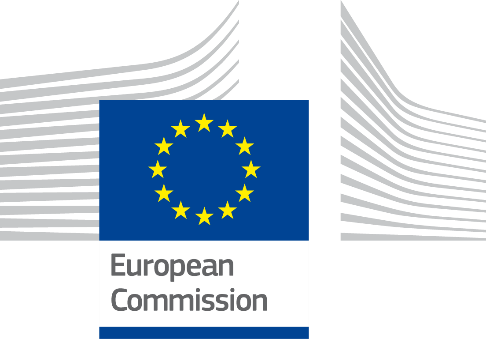
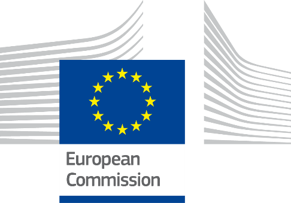

Lithuania
Table of Contents
Digital Public Administration factsheet 2023
1 Interoperability State-of-Play 4
2 Digital Public Administration Political Communications 8
3 Digital Public Administration Legislation 15
4 Digital Public Administration Infrastructure 24
5 Digital Public Administration Governance 32
6 Cross-border Digital Public Administration Services for Citizens and Businesses 36
1
Interoperability State-of-Play
Interoperability State-of-Play
In 2017, the European Commission published the European Interoperability Framework (EIF) to give specific guidance on how to set up interoperable digital public services through a set of 47 recommendations divided in three pillars. The EIF Monitoring Mechanism (MM) was built on these pillars to evaluate the level of implementation of the framework within the Member States. Whereas during the previous, the MM relied upon three scoreboards, the 2022 edition includes an additional scoreboard on cross-border interoperability, assessing the level of implementation of 35 Recommendations. The mechanism is based on a set of 91 Key Performance Indicators (KPIs) clustered within the four scoreboards (Principles, Layers, Conceptual model and Cross-border interoperability), outlined below.
Source: European Interoperability Framework Monitoring Mechanism 2022
Each scoreboard breaks down the results into thematic areas (i.e. principles). The thematic areas are evaluated on a scale from one to four, where one means a lower level of implementation and four means a higher level of implementation. The graphs below show the result of the EIF MM data collection exercise for Lithuania in 2022, comparing it with the EU average as well as the performance of the country in 2021.
Source: European Interoperability Framework Monitoring Mechanism 2022
Lithuania’s results in Scoreboard 1 show an overall good implementation of the EIF Principles, scoring above the European average for Principle 12 (Assessment of Effectiveness and Efficiency). Areas of improvement are concentrated in the Principle 1 (Subsidiarity and Proportionality), Principle 7 (Inclusion and accessibility) and Principle 9 (Multilingualism). More specifically, while scoring below the EU average in Principle 1, Lithuania’s upper-medium performance in Principle 7 and 9 follows the performance of the other EU Member States. Indeed, in order to achieve a higher score in these principles, it would be beneficial to foster the use of national interoperability frameworks and interoperability strategies aligned with the EIF (Principle 1 – Recommendation 1), the implementation of e-accessibility specifications that are widely recognised (Principle 7 – Recommendation 14), and the inclusion of multilingualism support on information systems (Principle 9 – Recommendation 16).
Source: European Interoperability Framework Monitoring Mechanism 2022
Lithuania shows a good performance concerning the implementation of the interoperability layers of Scoreboard 2. Particularly, Lithuania improved its score in Interoperability Governance and Semantic Interoperability. Nevertheless, the performance in these layers could be further improved as the country performance is still below the EU average. More specifically, Lithuania has still a lower-intermediate/Lower performance in Recommendation 21, 23 and 24, all referring to the need to have process and catalogues for standards and work standardisation, lowers the overall governance interoperability result for Lithuania. Moreover, Lithuania should prioritise the management of metadata, master data and reference data, putting into place an information management strategy at the highest possible level to avoid fragmentation and duplication. (Recommendation 31).
Source: European Interoperability Framework Monitoring Mechanism 2022
Lithuania shows a higher/upper-intermediate performance in the implementation of all the recommendations associated with Scoreboard 3 – Conceptual model. However, some improvements could be made in implementing recommendations related to catalogues as well as in security and privacy. In this regard, the lack of trust services according to the Regulation on eID (Recommendation 47) hampering the Lithuanian score in the security and privacy area. Moreover, Lithuania shows a reduction in the use external information sources and services while developing European public services (Recommendation 45) compared to 2021. This reduction will need to be further monitored with the results of 2023.
Source: European Interoperability Framework Monitoring Mechanism 2022
When looking at the performance in Scoreboard 4, Lithuania suffers of several data gaps. For instance, no data is available for Recommendation 4 – Give preference to open specifications, taking due account of the coverage of functional needs, maturity and market support and innovation; and Recommendation 8 – Do not impose any technological solutions on citizens, businesses and other administrations that are technology-specific or disproportionate to their real needs. However, Lithuania shows an at least upper-intermediate performance in almost all the principles/dimensions where data is available. Particularly, the country scores above the EU average in the implementation of the recommendations related to base registries such as, for instance, the creation and follow data quality assurance plans for base registries and related master data. Lithuania would also benefit from the use of a structured, transparent, objective, and common approach to assessing and selecting standards and specifications, considering relevant EU recommendations, and seeking to make the approach consistent across borders (Recommendation 22).
Additional information on Lithuania’s results on the EIF Monitoring Mechanism is available online through interactive dashboards.
Curious about the state-of-play on digital public administrations in this country? Please find here some relevant indicators and resources on this topic: |

2
Digital Public Administration Political Communications
Digital Public Administration Political Communications
Specific political communications on digital public administration
State Digitalisation Development Programme for 2021–2030
In 2020, the principles of Lithuania’s strategic planning were changed. The main planning document is the National Progress Plan 2021–2030, setting out the objective of promoting the digitalisation of the country. The Ministry of Economy and Innovation is the main Ministry responsible for achieving this objective, but all Ministries contribute by implementing digitalisation-related measures within their own sphere of activity.
In 2021, the main digitalisation document, the State Digitalisation Development Programme for 2021–2030, was approved. This programme sets out the following priorities for digitalisation:
- Consolidating State information resources, as well as information technology (IT) infrastructure and services;
- Ensuring the reliability of public sector data and the possibility to share them across sectors;
- Developing advanced tools and technological solutions, and integrate them into electronic services to ensure interoperability, security, convenience and accessibility (especially for people with disabilities) of these services, not only at national but also at cross-border level, giving priority to the development of advanced solutions based on artificial intelligence (AI), natural language processing and comprehension, machine learning, data analytics, electronic identification (eID) and trust; and
- Increasing digital competencies, as they are necessary in everyday life to meet the growing need to behave safely in the online space, understand about AI and the Internet of Things (IoT), and be able to use smart devices.
Berlin Declaration on Digital Society and Value-Based Digital Government
In December 2020, the Lithuanian government signed the Berlin Declaration on Digital Society and Value-Based Digital Government, thus re-affirming its commitment – together with other EU Member States – to foster digital transformation in order to allow citizens and businesses to harness the benefits and opportunities offered by modern digital technologies. The Declaration aims to contribute to a value-based digital transformation by addressing and strengthening digital participation and digital inclusion in European societies.
Interoperability
Baseline for a National Interoperability Framework
In 2021, the State Digitalisation Development Programme for 2021–2030 was approved. According to the programme, one of the priorities in the field of digitalisation is consolidating State information resources, as well as IT infrastructure and services. To that end, the programme ensures further consolidation of the State’s information resources infrastructure, as well as the interoperability of State information resources.
Concerning the National Interoperability Framework (NIF), no formal document focuses on it in Lithuania. However, the country has integrated its approach towards interoperability in the State Digitalisation Development Programme for 2021–2030, in the Law on the State Information Resources Management and in the State Information Resources Interoperability Platform (SIRIP). SIRIP is the multifunctional platform ensuring the provision of public and administrative electronic services on a ‘one-stop-shop’ basis through a central eGovernment portal and seeking to achieve the State information resources’ functional, technical and semantic interoperability. It provides data exchange, person identification in the electronic space, payment of State fees or other charges for the provision of public and administrative services, and eService design services to institutions.
Key Enablers
Open Data, Reusability and Access to Public Information
Data Opening
Data opening, one of the strategic goals of the Lithuanian State, was put forward in the State Digitalisation Development Programme for 2021–2030. Furthermore, data are a top priority also in the Lithuanian new government’s four-year programme, approved at the end of 2020. According to the programme, data are the cornerstone of the government’s decisions and communication.
The Ministry of Economy and Innovation, which defines the open data policy in accordance with the recommendations of the European Union (EU) and the Organisation for Economic Cooperation and Development (OECD), ensures that the provisions of the EU legal acts on open data and reuse of public sector information are implemented in the programme.
Lithuania has reached tangible results in amending legislation in this regard. The legal amendments address obligations on opening relevant data, and seek to increase reuse of publicly funded information and to bring the legislative framework up to date with the advances in digital technologies. Amendments to the Law on the Right to Receive Information and Reuse of Data entered into force in July 2021, transposing the provisions of Directive (EU) 2019/1024 on open data and the re-use of public sector information, and establishing a data opening model which obliges institutions to inventory their data to know what data are owned by the State and open data on user demand. The data opening model also establishes a centralised data opening scheme, which should significantly speed up the data opening process. Datasets of State institutions are processed and opened centrally through the State Data Management Information System managed by Statistics Lithuania. Data opening is currently being harmonised, focusing on automated processes and on establishing an organisational structure in the institutions. All public bodies are obliged to appoint a person responsible for organising the opening of the authority’s data, the ‘open data coordinator’. The designated coordinator has to ensure that the process of opening data is carried out, together with its supervision and compliance with the requirements laid down in the legislation.
According to the Open Data Maturity Report 2022, Lithuania is a fast-tracker in the field of open data and was ranked 13th among 34 countries.
eID and Trust Services
No political communication has been adopted in this field to date.
Security aspects
National Cybersecurity Strategy
The National Cybersecurity Strategy was adopted on 13 August 2018 via Resolution No. 818 of the government of the Republic of Lithuania. It sets out the main national cybersecurity policy objectives for Lithuania in the public and private sector until 2023. The implementation of the strategy is aimed at (i) strengthening the cybersecurity of the State and the development of cyberdefence capabilities; (ii) ensuring prevention and investigation of criminal offences committed against cybersecurity; (iii) promoting a culture of cybersecurity and developing innovation; (iv) working towards a closer collaboration between public and private sectors; and (v) enhancing international cooperation and ensuring the fulfilment of international obligations in the field of cybersecurity.
Interconnection of base registries
No political communication has been adopted in this field to date.
Domain-specific political communications
 Operational Programme for EU Structural Funds Investments
Operational Programme for EU Structural Funds Investments
On 8 September 2014, a multi-fund Operational Programme (OP) for Lithuania, including the European Social Fund (ESF), was launched to reach the country’s goals within the EU 2020 Strategy. It brought together several key EU investment funds aimed at helping Lithuania’s economic development as well as tackling social exclusion, unemployment and vital issues like energy security.
On 3 August 2022, the government approved the new Programme for the European Union Funds’ Investments for 2021–2027. The budget of the programme amounts to almost EUR 8 billion and aims to ensure long-term economic and social well-being, and the resilience and competitiveness of the Lithuanian economy. In light of the Lithuanian government’s programme and the policy goals set in Regulation (EU) 2021/1060, investments for the period 2021–2027 target the following main areas: (i) innovation and digitisation; (ii) education; (iii) skills development; (iv) green transformation; (v) advanced, safe and diverse transport; and (vi) sustainable and integrated development of cities and regions.
One of the specific objectives is “to reap the benefits of digitisation for citizens, companies, research organisations and public authorities”. In this regard, investments contribute to the digitisation of small- and medium-sized enterprises (SMEs) and the public sector. The focus in the period 2021–2027 will be on the digitisation of the eBusiness model and products of SMEs, as well as on the development of new, innovative measures and technological solutions in eServices, making them more available for both businesses and citizens. Investments will also be targeted at trust services which do not exist in the market or are not used widely. Finally, in the period 2021–2027 special attention will be also paid to the use of open data of the public sector to create financial incentives for businesses to use open data solutions.
eHealth System Development Programme
On 26 June 2014, the Lithuanian Parliament approved the 2014—2025 National Health Strategy.
To ensure smooth development and implementation of the eHealth system, Lithuania’s 2017—2025 eHealth System Development Programme, setting new measures for the implementation of the strategy, was approved by Order No. V-878 of the Minister of Health of the Republic of Lithuania on 17 July 2017 and amended in 2019. The programme aims to ensure that all healthcare institutions in Lithuania participate in the development of the eHealth system and are able to provide patients’ health records to the central eHealth system (ESPBI IS) via a dedicated portal. The eHealth System Development Programme is accompanied by an action plan. The Action Plan of the eHealth System Development Programme for the period 2018—2025 was approved by Order No. V-362 of the Minister of Health of the Republic of Lithuania on 29 March 2018.
As to the development of the eHealth system of Lithuania, the implementation plan for the health provisions of the XVIII Government Programme foresees as priority area an effective health system management and financing to guarantee the functionality and integrity of eSystems. The following actions are planned for the next years: (i) to prepare, approve and start applying a digital health system implementation plan for a coordinated, high-quality and interoperable digitisation of the healthcare system; (ii) to improve monitoring processes, extend the digital health history in the ESPBI IS, develop new functionalities and ensure the use of the Information System of Patient Appointment Management (IPR IS) at national level; (iii) to adopt legislation and create the infrastructure to facilitate secondary use of health data; and (iv) to modernise the information systems necessary for the epidemiological surveillance of communicable diseases, and ensure their integrity by improving the quality of case and outbreak investigation, and data analysis. The plan also foresees that all the IT systems operating within the Lithuanian health system (not only ESPBI IS) are to be assessed as a whole, influence each other and be interoperable. Therefore, the plan provides for the creation of a map of health system information resources, and the performance of information systems’ maturity analyses and integrity assessments.
Innovative Technologies
Artificial Intelligence (AI)
Lithuanian Artificial Intelligence Strategy
In the first quarter of 2019, the Lithuanian Ministry of Economy and Innovation adopted Lithuania’s first Artificial Intelligence Strategy. The strategy, which describes the vision for the development of AI in Lithuania, contains policy recommendations for Lithuanian public administration bodies and researchers alike. The strategy is divided into five key priority areas:
- Legal and ethical perspective;
- AI ecosystem and Lithuania;
- AI in the Lithuanian economy;
- Skills and competences; and
- Research and development.
Declaration on AI in the Nordic-Baltic Region
In May 2018, the Ministers responsible for digital development from Denmark, Estonia, Finland, the Faroe Islands, Iceland, Latvia, Lithuania, Norway, Sweden and the Åland Islands released a Declaration on AI in the Nordic-Baltic Region. The declaration aims to create synergies among the Nordic-Baltic countries on:
- Improving opportunities for skills development with the goal of enabling more authorities, companies and organisations to use AI;
- Enhancing access to data for AI to be used for better service to citizens and businesses in the region;
- Developing ethical and transparent guidelines, standards, principles and values to guide on when and how AI applications should be used;
- Ensuring that infrastructure, hardware, software and data, all of which are central to the use of AI, are based on standards, enabling interoperability, privacy, security, trust, good usability and portability;
- Ensuring that AI gets a prominent place in the European discussion and implementation of initiatives within the framework of the Digital Single Market;
- Avoiding unnecessary regulation in the area, which is under rapid development; and
- Utilising the structure of the Nordic Council of Ministers to facilitate the collaboration in relevant policy areas.
Distributed Ledger Technologies
No political communication has been adopted in this field to date.
Big Data
No political communication has been adopted in this field to date.
Cloud Computing
No political communication has been adopted in this field to date.
Internet of Things (IoT)
Study on the Use of Integrated eSIM
To foster the IoT, a study titled ‘Model of the Use of Integrated Subscriber Identification Modules (eSIM) in Lithuania’ was conducted by Ernst & Young Baltic in 2021. The study presents an analysis of the international practice of eSIM technology and the current situation in Lithuania, and proposes a model for promoting the use of eSIM in Lithuania.
In 2022, a project for the implementation of electricity smart meters for all consumers was started. Approximately 216 000 electricity smart meters with eSIM technology had been installed as of the end of 2022.
High-performance Computing
No political communication has been adopted in this field to date.
High-speed Broadband Connectivity
The Guidelines for the Development of Fifth Generation Mobile Communications (5G) of Lithuania (2020–2025), approved by Government Resolution No. 577 on 3 June 2020, provide that 5G should be developed (with commercial 5G services to be launched):
- until 2022, in at least one of the five largest cities of the Republic of Lithuania by population - Vilnius, Kaunas, Klaipėda, Šiauliai or Panevėžys;
- until 2023, in the five largest cities of the Republic of Lithuania by population; and
- until 2025, in urban areas, on international land transport corridors (Via Baltica, Rail Baltica) and other main motorways and arterial railway lines of State importance, as well as in airports and seaports.
The Memorandum for the Deployment of 5G in Lithuania was signed on 12 October 2021. Mobile operators and other stakeholders are committed to ensuring the efficient and coordinated development of 5G, including uninterrupted 5G on the international transport corridors Via Baltica and Rail Baltica, as well as the availability of electronic communications networks and services with connectivity of at least 100 Mbps to at least 95% of Lithuanian households.
National Broadband Plan
The renewed National Broadband Plan was approved by Order No. 3-477 of the Minister of Transport and Communication on 4 October 2021. The plan determines the measures that the State institutions of the Republic of Lithuania should implement from 2021 to 2027, i.e. during the financing period of the EU funds, in order to achieve the targets of developing a broadband with a speed of at least 100 Mbps and ensuring that all Lithuanian households can have access to the internet at a speed of at least 100 Mbps, which can be increased to gigabit. According to this plan, the following projects are envisaged:
- Implementation of a broadband communication infrastructure with a speed of at least 100 Mbps in the ‘white’ rural areas of the country by building communication towers and laying fibre-optic cable lines; and
- Development of a gigabit broadband infrastructure for digitally sensitive entities (private companies, non-governmental and governmental organisations, municipalities and municipal companies).
GovTech
 Report on Digital Innovation in the Public Sector
Report on Digital Innovation in the Public Sector
In 2021, the GovTech Lab published the report ‘GovTech Lithuania 2021. Overview of Challenges and Solutions’. The report describes the way Lithuanian public sector institutions have sought to address their technological challenges by exploring digital innovation solutions developed in collaboration with the private sector, particularly start-ups and innovative companies. The report also advises on how to create successful collaborations in carrying out innovative public procurement processes (i.e., design contest). Furthermore, with the objective of inspiring other institutions to follow the digital transformation path, the publication brings forward 31 real-life examples of cooperation between GovTech companies and the public sector that happened in 2021 in Lithuania.
At the end of 2022, GovTech Lab published another report entitled ‘Analysis of the GovTech Challenge Series. The Experience of 50+ Organisations while Developing Digital Innovation’. The report highlights the experience of organisations that participated in five cycles of the ‘GovTech Challenge Series’, describing the results achieved, the main challenges encountered as well as the preconditions needed for successful implementation. The analysis has also shown that the programme has created additional added value for participants, such as new skills and mindsets that have enabled them to initiate other innovation projects, and the setup of a network with other public servants as well as with members of academia and start-ups. The report also presents the experience and challenges in carrying out innovative public procurement processes (i.e., design contest), as well as reflections on the results of this process.

3
Digital Public Administration Legislation
Digital Public Administration Legislation
Specific Legislation on Digital Public Administration
Decree on the Government Programme Implementation Plan
The Decree on the Government Programme Implementation Plan (2021—2024) was adopted on 10 March 2021. Most eGovernment-related goals are in section 9.2 of the decree, titled ‘360° eGovernment’. It encompasses: (i) the development of a State data architecture; (ii) the implementation of a new stage of centralisation of State IT services; (iii) the creation of State information resources and a digital transformation management mechanism; (iv) the use of mandatory basic components (rights management, interoperability, classifications, metadata structures, functional requirements, opening, eServices, etc.); (v) the development and implementation of a digital skills competency model in the civil service; (vi) the creation of the necessary conditions for businesses to create innovative and convenient technological solutions for consumers; and (vii) the promotion of a transfer of public services provision to businesses.
Law on Public Administration
The new wording of the Law on Public Administration was adopted in the Seimas in order to (i) improve the management of public sector bodies; (ii) clarify the competences and optimise the administrative structures of public sector bodies; (iii) refine the scope of public administration; (iv) clarify the concepts of public administration, administrative regulation and public service so that they are well understood; (v) improve public service administration; (vi) refine the concept of public service so that it is easier to identify public services and separate them from administrative services and other functions; (vii) spell out the administrative decision-making process; (viii) eliminate excessive regulation related to the submission and processing of applications; (ix) adjust other legal provisions taking into account practical application problems; and (x) update the legal regulation of economic entities. The law entered into force on 1 November 2020.
Interoperability
Law on the State Information Resources Management
The Law on the State Information Resources Management regulates the principles of the interoperability of registers, along with the platform for interoperability of State information systems.
Key Enablers
Open Data, Reusability and Access to Public Information
Law on the Right to Receive Information and Reuse of Data
The original Law on the Right to Receive Information from State and Local Authorities and Institutions of 2000 was amended several times, to comply with Directive 2003/98/EC (PSI Directive) and Directive 2013/37/EU, resulting into the Law on the Right to Receive Information from State and Local Authorities and Institutions No. XII-2666 of 11 October 2016. The amended law increased the scope of information intended for reuse, including in libraries, museums and archives, which account for a significant part of the public sector information resources, in particular upon the increase in digital materials as a result of the implementation of digitisation projects. The new law also established the conditions for the open licence to use public sector information based on the creative commons licence.
The law was amended again in 2018 to transpose Directive (EU) 2016/2102 of the European Parliament and of the Council on the accessibility of websites and mobile applications of public sector bodies. In the beginning of 2021, the Ministry of Economy and Innovation prepared new amendments to the law, transposing the provisions of Directive (EU) 2019/1024 on open data and the re-use of public sector information. The amendments address obligations on opening data, and seek to increase reuse of publicly funded information and bring the legislative framework up to date with the advances in digital technologies. The amended Law on the Right to Receive Information and Reuse of Data entered into force on 17 July 2021.
 Law on Official Statistics and State Data Governance
Law on Official Statistics and State Data Governance
Following the adoption of the Law on Official Statistics and State Data Governance, additional instruments for data collection and quality use were created. Statistics Lithuania acquired new tasks and tools by becoming a more efficient and operative body called State Data Agency, combining different data of different State institutions. This development provides a much broader opportunity for data to be used in political decision-making. The State Data Agency is also responsible for the creation of the national data lake, which will work as a system where the private and public sector, and scientists will use analytical tools and reuse public data.
In July 2022, amendments to the Law on Official Statistics and State Data Governance were adopted. They establish a new approach to the management of State data and the regulation of their processing, reduce the administrative burden on data-providing institutions, and ensure more flexible use of collected data in the public sector as well as faster data sharing between State data systems.
General Requirements for Websites and Mobile Applications of State and Municipal Institutions and Bodies
The General Requirements for Websites and Mobile Applications of State and Municipal Institutions and Bodies (hereinafter referred to as the General Requirements) were approved by Resolution No. 480 of the government of the Republic of Lithuania on 18 April 2003.
The purpose of the General Requirements is to enable the public to access online all public information referred to in Article 5(2) of the Law on the Right to Receive Information from State and Local Authorities and Institutions, to unify the websites of all institutions and bodies, and to ensure the relevance, reliability and searchability of the information provided therein.
eID and Trust Services
eIDAS
In 2020, Lithuania successfully completed the procedures set out in the Regulation on electronic identification and trust services for electronic transactions in the internal market (eIDAS Regulation) for the notification of a Lithuanian eID scheme that would be recognised at cross‑border level in the EU internal market. The procedure confirmed that the eID scheme according to which the identity cards of the Republic of Lithuania are issued complies with a high level of security and reliability.
In accordance with the requirements of the eIDAS Regulation, Lithuania has implemented and operates the National Electronic Identification Information System (eIDAS node). The manager of this information system is the Information Technology and Communications Department under the Ministry of the Interior of the Republic of Lithuania. This institution has implemented and maintains the centralised technical solutions set out in the eIDAS Regulation that ensure secure and reliable cross-border authentication when the identity cards of the Republic of Lithuania are used as an eID means for obtaining online services in another State of the EU or of the European Economic Area.
Law on Electronic Identification and Trust Services for Electronic Transactions
Adopted on 26 April 2018, the Law on Electronic Identification and Trust Services for Electronic Transactions ensures the compliance of the Lithuanian legal framework with the eIDAS Regulation. The main purpose of the law is to create a legal basis for the effective operation of eID and the market of trust services in the Republic of Lithuania to ensure the best possible protection of service users and their interests. This law regulates (i) the legal effect of electronic signatures, electronic seals, electronic time stamps and trust services; (ii) the obligations of trust service providers and users; (iii) the terms of and the procedure for the suspension and revocation of qualified certificates for electronic signatures and electronic seals or certificates for website authentication; and (iv) the supervision of trust service providers.
Order on the Approval of the Specifications for the Procedure Granting the Qualified Trust Service Provider and the Qualified Trust Service Status
The Order on the Approval of the Specifications for the Procedure Granting the Qualified Trust Service Provider and the Qualified Trust Service Status, the Incorporation Thereof in the National Trusted List and the Provision of Activity Reports on Qualified Trust Service Providers details the procedure for granting the status of qualified trust service provider and qualified trust service. It also incorporates the actors in the national trusted list and provides for activity reports on qualified trust service providers. The procedure was approved by Order No. 1V-588 of the Director of the Communications Regulatory Authority of the Republic of Lithuania on 21 June 2018.
Order on the Specifications for the Identification of Personal Identity and Additional Specific Attributes
The Order on the Specifications for the Identification of Personal Identity and Additional Specific Attributes when Issuing Qualified Certificates for Electronic Signatures, Electronic Seals and Website Authentication lays down the specifications for the identification of personal identity and additional specific attributes when issuing qualified certificates for electronic signatures, electronic seals and website authentication. The specifications were approved by Order No. 1V-1055 of the Director of the Communications Regulatory Authority of the Republic of Lithuania on 26 October 2018.
Identity Card and Passport Law
Adopted in 2014, the Identity Card and Passport Law defines the purpose of an identity card and a passport, the terms of issuance, replacement/renewal and validity of these identification documents as well as the data recorded therein.
Security Aspects
Ruling No. 709 Amending the Interinstitutional Action Plan for the Implementation of the National Cybersecurity Strategy
On 3 July 2019, the Lithuanian government amended the Interinstitutional Action Plan for the Implementation of the National Cybersecurity Strategy. Ruling No. 709 amended and recast the first annex of the action plan, defining the objectives, the actions to be undertaken, and the allocation of resources and responsibilities among institutional actors.
Law on Cybersecurity
Code of Administrative Offences
Regarding the transposition of the Security of Network and Information Systems Directive (Directive (EU) 2016/1148 or NIS Directive) into national law, the necessary amendments to the Code of Administrative Offences of the Republic of Lithuania were enacted on 27 June 2018. The relevant provisions impose upon cybersecurity entities the responsibility to provide the requested information on their IT systems, in compliance with the organisational and technical cybersecurity requirements.
The Code of Administrative Offences was then last amended on 17 June 2021, entering into force on 28 June 2021, to determine the penalties applicable to infringements as defined in the Law on Cybersecurity.
Law on Cybersecurity
Adopted on 13 August 2018, alongside with the National Cybersecurity Strategy, the Law No. 818/2018 sets out the organisational and technical cybersecurity requirements for cybersecurity entities, the criteria and the process for identifying critical information infrastructure and it establishes the different cyberincident categories, the information procedure for the notification of cyberincidents, the cyberincident management requirements for cyberincident investigation and the cyberincident analysis after investigation.
Law on the Legal Protection of Personal Data
The Law on the Legal Protection of Personal Data was adopted on 11 June 1996 and last amended on 16 July 2018. The purpose of this law is the protection of the fundamental rights and freedoms of an individual in terms of the right to personal data protection and the guarantee of a high level of personal data protection. This law establishes the main elements of personal data processing, the legal status and powers of the State Data Protection Inspectorate, the powers of the Supervisor of Journalism Ethics, and the procedure for investigating infringements of the law governing personal data and/or privacy protection and for the issuance of administrative fines by the State Data Protection Inspectorate and the Supervisor of Journalism Ethics. The law is compliant with the General Data Protection Regulation (GDPR).
Interconnection of Base Registries
 Law on the Management of State Information Resources
Law on the Management of State Information Resources
The aim of the Law on the Management of State Information Resources is to ensure proper creation, management, disposal, use, supervision, interaction, planning, financing and protection of State information resources. The law was amended on 21 November 2017 by transferring the remaining responsibilities in the field of electronic information security from the Ministry of the Interior to the Ministry of National Defence. Furthermore, the amendments to the law adopted on 20 December 2018 set out the provisions for the creation of a governmental network, detached from public internet, for those State institutions that have functions related to mobilisation. This ensures that, even in time of conflict, fundamental institutions are protected and able to exchange information. In addition, in 2019 amendments were made with regards to partial compensation of the costs for the free registration and provision of data from the State budget during the year.
On 12 May 2022, the Seimas adopted additional amendments to the Law on the Management of State Information Resources, allowing to store data managed by the national authorities and institutions in public and private data centres located in the territory of Lithuania or in data centres in the territories of secure States. The amendments also provide for copies of State information resources to be kept in data centres in Lithuania and in other Member States of the EU, the European Economic Area or NATO to be available in cases of war, emergency or other crises. The transfer of State data to data centres located in the territories of foreign States will ensure the online availability of digital services provided by public authorities.
Law on the Offence Registry
On 1 July 2015, a new Law on the Offence Registry entered into force. The main purpose of this registry is to collect all the offences recorded in accordance with the procedure for administrative violations. The information recorded in the registry will be available to the competent State authorities dealing with administrative offences and people who have committed administrative violations will be able to take advantage of newly developed electronic services designed to pay fines quickly and conveniently. A registry integrated with the Tax Accounting Information System (MAIS) and the Taxpayer eEducation, Counselling and Information Services System (Eski) has been developed to that end.
Regulations of the Population Register
The Regulations of the Population Register contain provisions on the purpose of the Population Register, the objects for registration, the processing of data, the interoperability with other registers, the protection of data, and the provision and use of the register’s data.
Law and Regulations on the Register of Legal Entities
The Law on the Register of Legal Entities establishes that the Register of Legal Entities is a base State register. In addition, it defines the creation of the register, and identifies the controller and the processor of the register’s data, namely the Ministry of Justice and the State Enterprise Centre of Registers, respectively. Furthermore, the law (i) states that data are public; (ii) defines the interaction of the Register of Legal Entities with the Central, Commercial and Company Registers of the Member States of the EU and the States of the European Economic Area; and (iii) establishes fees for data registration, and provision of copies of data and documents.
Civil Code
One of the main legal acts regulating the Register of Legal Entities is the Civil Code. The Civil Code establishes the basic rules related to the registration of legal entities in the register and the provision of the register’s data.
Law and Regulations on the Real Property Register
The Law on the Real Property Register sets out the legal framework for the Real Property Register, whose purpose is to record real property objects, ownership and other rights in rem pertaining to these objects, restrictions related to these rights, legal facts established by law and territories where special land use conditions apply.
The Regulations on the Real Property Register establish the purpose of the register, and regulate the objects for registration, the functions of the register data controller and the register data processor (i.e. the State Enterprise Centre of Registers), the processing of data, and the interoperability with other registers, cadastres and information systems.
Law and Regulations on the Real Property Cadastre
The Law on the Real Property Cadastre regulates the establishment of cadastral data of real property objects which are registered in the Real Property Register, their entry in the Real Property Cadastre, the processing of data and the formation of real property objects as well as the conditions for the activity of surveyors, and their rights, duties and responsibilities.
The Regulations on the Real Property Cadastre establish the purpose of the Real Property Cadastre and its objects, the functions, rights and obligations of the cadastre data processor and the recording of real property, which has to be registered in the Real Property Register.
Law and Regulations on the Address Register
The Law on the Territorial Administrative Units and their Boundaries provides for the established counties and municipalities, and changes of their territories, to be recorded in the Address Register, also encompassing wards and residential areas, and changes in their territories or names. Furthermore, the law states that the controller and processor of the Address Register data are the Ministry of Justice and the State Enterprise Centre of Registers, respectively.
The Regulations on the Address Register regulate the purpose of the Address Register and its objects, the functions, rights and obligations of the register data controller and processor, the processing of the register data, the interaction with other registers, as well as the security, publication and provision of the register data.
Regulation on the Register of Road Transport Vehicles
The Regulation on the Register of Road Transport Vehicles regulates the Register of Road Transport Vehicles’ management bodies, their rights and obligations, the register data, the interaction with other registers, as well as register data safety and reorganisation. The body in charge of the Register of Road Transport Vehicles is the Ministry of the Interior, as defined by the legislation. The regulation also describes the exact data to be processed in the register, such as technical data concerning road vehicles, related restrictions, unique identification codes of register objects and vehicle registration plates.
eProcurement
Law on Public Procurement
Public procurement procedures in Lithuania are regulated by the Law on Public Procurement. The most recent version of the law came into force on 1 July 2017.
As to eProcurement, the aforementioned law contains provisions on the obligation to use the Central Public Procurement Information System (CPP IS) for communication and information exchange between public buyers and economic operators, as well as on the electronic publication of tender notices and submission of tenders, and the use of eAuctions and dynamic purchasing systems.
eInvoicing Legislation
Lithuania launched a new standard eInvoicing module on 1 July 2019. It enables contracting authorities and entities to receive and process electronic invoices from other EU countries that comply with the European standard EN 16931-1:2017. Electronic invoices based on the new standard may be delivered by suppliers through any certified Peppol Access Point that uses the Peppol AS4 Profile. Lithuanian businesses and contracting organisations are encouraged to get ready for changes in advance, and to harmonise the content and format of their electronic invoices with the new standard eInvoicing module.
Domain-specific Legislation
Law on Services
On 15 December 2009, the Lithuanian Parliament adopted the Law on Services to implement Directive (EU) 2006/123 of the European Parliament and the Council of 12 December 2006 on services in the Internal Market (OJ 2006 - L376/36). The law intends to simplify procedures and formalities that service providers need to comply with. In particular, it requires that unjustified and disproportionate burdens be removed to foster the establishment of businesses and the cross‑border provision of services. The law also strengthens the rights of the recipients of such services and prohibits discriminatory conditions based on the nationality or the place of residence of the service recipient (e.g. discriminatory tariffs).
Law on Information Society Services
The Law on Information Society Services was adopted in May 2006 to ensure the implementation of Directive 2000/31/EC on certain legal aspects of information society services, in particular on electronic commerce in the Internal Market (eCommerce Directive). The main purpose was to establish legal grounds to regulate the provision of information society services. The law defines the requirements for the information provided and the conclusion of agreements by electronic means, regulates the responsibilities, rights/duties and activities of service providers, and establishes the means for dispute resolution. It also protects the freedom to provide information society services towards a party established outside the country. Restrictions may apply in certain cases, such as intellectual property rights, the freedom of choice of the law applicable to a contract, and others.
Innovative Technologies
Artificial Intelligence (AI)
No legislation has been adopted in this field to date.
Distributed Ledger Technologies
 Law on the Prevention of Money Laundering and Terrorist Financing
Law on the Prevention of Money Laundering and Terrorist Financing
In July 2022, the Lithuanian government decided to revise the Law on the Prevention of Money Laundering and Terrorist Financing with the objective of ensuring increased transparency, while fostering the further development of the national cryptocurrency sector. The amendments prepared by the Lithuanian government and the national Central Bank aimed to regulate virtual currency exchanges and depositories made by operators within Lithuania.
More in detail, the law allows operators to obtain a cryptocurrency license. A legal entity that has started or terminated to carry out the activities of a virtual currency exchange operator or a depository virtual currency wallet operator must inform the data processor of the Register of Legal Entities about performance of these activities no later than five working days from the start or the end of their performance. By submitting this information, stakeholders confirm that the operator itself or the members of its management/supervisory bodies, and the beneficial owners are familiar with the legal acts governing the prevention of money laundering and terrorist financing and meet their requirements. The data processor of the Register of Legal Entities also checks whether a legal entity established in the Republic of Lithuania, whose legal form is a public or private limited liability company, intending to carry out the activities of a virtual currency exchange operator and/or a depository virtual currency wallet operator has registered the authorised capital, amounting to at least EUR 125 000. In addition, the data processor of the Register of Legal Entities manages the lists of legal entities established in the Republic of Lithuania and branches of a legal entity of a Member State of the European Union or a foreign State, and publishes them on its website.
Big Data
No legislation has been adopted in this field to date.
Cloud computing
Governmental Resolutions on Cloud Computing
The use of cloud computing is regulated by the Resolution of the Government of the Republic of Lithuania of 2015 on the Approval of the Consolidation of the State IT Infrastructure and the Optimisation of IT Management. To achieve all set goals, Lithuania further provided for the consolidation of the State information resources infrastructure and the use of cloud services. The resolution was amended in 2020 and 2022. The amendments set out a list of State institutions which must start using the services offered by the cloud computing service provider.
Internet of Things (IoT)
 Amendment to the Law on Electronic Communications
Amendment to the Law on Electronic Communications
The auctions to grant the right to use 5G radio frequencies from the 3400-3800 MHz and 694-790 MHz spectrum bands, organised by the Communications Regulatory Authority of the Republic of Lithuania, were completed in the autumn of 2022.
To foster the IoT, an amendment to the Law on Electronic Communications was introduced. It protects the right of users to benefit from public electronic communications services with devices with eSIM, while ensuring their right to change the provider of a publicly available electronic communications service. Furthermore, the Communications Regulatory Authority of the Republic of Lithuania adopted an act detailing rules and procedures for the remote activation or the change of mobile communications services with devices with eSIM.
High-performance Computing
No legislation has been adopted in this field to date.
High-speed Broadband Connectivity
No legislation has been adopted in this field to date.
GovTech
No legislation has been adopted in this field to date.

4
Digital Public Administration Infrastructure
Digital Public Administration Infrastructure
Platforms and Applications
 National Platforms and Applications
National Platforms and Applications
State Information Resources Interoperability Platform
The State Information Resources Interoperability Platform (SIRIP) , also known as the eGovernment Gateway, is managed by the Ministry of Economy and Innovation of the Republic of Lithuania. Its proper functioning is ensured by the Information Society Development Committee.
SIRIP is a system that delivers centralised access to public services: it is a convenient electronic platform that offers an easy way for public administrations to design, deliver and manage eServices, and it is also a universally accessible virtual space where these services can be requested.
SIRIP provides the possibility to determine the identity of service users in a flexible, safe and reliable way. System users can connect using a mobile or electronic signature, EU identity cards or electronic banking systems. It also enables recipients to pay for services in a safe and convenient manner through different payment methods, while allowing external systems to perform and administer them in the SIRIP space.
SIRIP has developed one modernised and three new compound eServices according to live events such as birth of a child, losing and finding a job, moving or preparing to move to another country, and starting farming. The compound eServices are user-oriented, proactive and designed according to the Once-Only principle, meaning that data which is available on national registers or information systems is received automatically and users do not need to provide it manually. The compound eServices are available for citizens using the eGovernment Gateway portal (epaslaugos.lt) since March 2023. For further information, please visit the SIRIP website.
The Digital Services Platform (DSP) is a solution aiming to modernise/rebuild SIRIP, which will be more user-oriented, and based on building blocks and a microservice architecture. The DSP will be the main portal for the integration of the Single Digital Gateway Once-Only technical system.
In 2022 the portal had 122.7 million visitors and provided access to over 649 eServices. In the first two months of 2023 the number of visitors amounted to 17.3 million.
Public and Administrative Services Monitoring and Analysis Information System
The Public and Administrative Services Monitoring and Analysis Information System (PASIS) is designed to collect and store descriptions of public and administrative services provided and/or administered by public administration institutions, as well as information on service performance monitoring indicators. The public has access to the information provided in the public catalogue on the terms of service provision and their providers.
A restructuring process of PASIS is now underway and SIRIP is going to take over all PASIS functionalities.
i.APS
The main purpose of the eAccounting system i.APS is to provide all natural persons (self-employed according to a business certificate or self-employed according to a certificate of self-employment) with the opportunity to manage and use more simplified accounting services for their data, while assisting in reducing the administrative burden and ensuring more effective control on tax compliance and income accounting.
The main features of the system are the following: (i) no obligation to start using any subsystem (e.g. eInvoicing subsystem) ; (ii) automatic calculation of various types of taxes (income, social security, etc.); (iii) availability of an invoicing/storage subsystem for natural persons; (iv) elaboration of analytic reports for users of the subsystem; and (v) automatic notification about the obligation to be registered as a VAT payer.
The essential changes introduced thanks to the system can be summarised as follows:
- Tax returns are prefilled based on preliminary information to save taxpayers’ time;
- The accounting/storage subsystem for natural persons is accessible via internet; and
- Information about income and expenses incurred can be entered electronically into a register in the income and expenses accounting subsystem.
Register of Legal Acts
The Law on the Legislative Framework of 1 January 2014 establishes a centralised information system to track and coordinate the legislative process (TAIS) and a paperless information system for publishing legislative acts (Register of Legal Acts or TAR). TAIS is used for drafting legal acts and for ensuring that the outcomes of the legislative process are accessible to the public in a single space. TAR is used for registering and publishing legal acts and their consolidated versions, as well as depersonalised rulings and international treaties, all of these publicly available, free of charge, 24/7. The system users are State and municipal institutions, and other legal bodies involved in legislation. Once a legal act is registered and published on TAR, it is considered officially promulgated. A legal act reaches TAR in the form of an eDocument bearing an eSignature.
Open Data Portal
The Lithuanian Open Data Portal was launched on 1 July 2020 as the single access point to all open datasets in Lithuania. Currently, the portal provides more than 1 936 metadata. These include 1 675 metadata linked to data sources and described in compliance with the Data Catalogue Vocabulary (DCAT) requirements, and more than 718 metadata available to users in machine readable formats (CSV).
The portal is intended for public sector bodies, businesses and all the open data users who might be interested. It offers data providers functionalities allowing them to stocktake datasets and evaluate priorities, describe datasets with metadata and upload open data. The portal also allows data users to search for and have access to relevant data, make comments about datasets or send requests for new datasets. The portal also provides space for sharing best practices, solutions, open data use cases as well as learning material.
Subnational Platforms and Applications
Municipal Open Data Portals
Municipal open data portals are in the process of being integrated into the Lithuanian Open Data Portal. The cities of Vilnius, Kaunas and Klaipeda already offer open data portals to their communities and society at large.
Networks
Secure State Data Communications Network
The Secure State Data Communications Network (Secure Network) provides secure nationwide communication services for the most important Lithuanian institutions. The Secure Network is the national network (national domain) for the EU’s pan-European administrative network TESTA. It currently covers all of Lithuania and connects only the most important Lithuanian institutions which are assigned functions during emergencies, natural disasters, mobilisation and other crises. The government-approved secure list of network users contains 458 institutions, including public authorities and their subordinates, hospitals, municipal administrations and others.
Data Exchange
 Electronic Health Services and Cooperation Infrastructure Information System
Electronic Health Services and Cooperation Infrastructure Information System
The Electronic Health Services and Cooperation Infrastructure Information System (ESPBI IS) is a national system of organisational, technical and software measures that have developed a centralised database of health data. It enables the exchange of such data among patients, healthcare professionals and institutions. The ESPBI IS strives to ensure a higher level of patient awareness about health and a more effective use of available resources for the provision of healthcare services, and seeks to base those services on modern technologies.
The structure of the ESPBI IS is based on a repository database, which consists of separate databases of patient electronic health records (EHRs), medical devices, classifiers, medical images, ePrescriptions, as well as reports and statistical information.
The ESPBI IS has been created as a single data centre which stores the medical records of each resident (patient) and also allows to integrate data from all internal information systems of healthcare institutions into a unified system. For the smaller healthcare institutions that do not own internal information systems, a special eHealth portal has been developed. Authorised healthcare professionals can now provide the required patient data to the central EHR database or other ESPBI IS databases through their computers. This means that patient data can be transferred to the ESPBI IS either directly via a special eHealth portal or by integrating the internal information systems of larger healthcare institutions.
In 2022, the ESPBI IS served 100% of insured patients who are registered with a primary healthcare institution that has a contract with the Health Insurance Fund. Furthermore, in the same year 99.7% of all reimbursed drugs were prescribed electronically, while 100% of referrals, 97% of inpatient recovery, 100% of out-patient descriptions, 100% of child’s birth certificates and medical death certificates, and 97% of driver’s medical certificates were provided to the ESPBI IS.
In 2022, the number of medical records decreased, because the state of emergency was canceled in Lithuania and the number of COVID-19 tests decreased.
The data stored in the ESPBI IS are also accessible to patients via a special national internet portal. More and more people are visiting the national eHealth portal each year, with unique visits increasing from 6 475 to 3 619 342 between 2019 and 2022.
Social Support and Family Information System
The Social Support and Family Information System (SPIS) is an information system operating under cooperation agreements between the Ministry of Social Security and Labour, and all the country’s municipalities. The purpose of SPIS is to uniformly record and accumulate information on social assistance provided in the municipalities (social benefits and compensations, social support for children, social services, activities carried out in the field of children rights protection, etc.), analyse the data by municipalities, types of support and beneficiaries, as well as prevent several municipalities from providing the same benefits at the same time.
Bailiff’s Information System
After the implementation of the project ‘Creation of eServices for Participation in the Enforcement Process, Auctions and Forced Sales Auctions’ in 2015, the following maturity-level-4 services were worked on: (i) the Bailiff’s Information System, consisting of internal and external portals, was created; (ii) the subsystem of electronic auctions and electronic forced sales auctions (eAuction) was modernised; (iii) the Electronic Enforcement File Portal was developed; and (iv) the Cash Restrictions Information System was established.
The Bailiff’s Information System assists bailiffs in (i) creating an enforcement file; (ii) checking the financial situation of a debtor in real time; (iii) creating procedural documents; (iv) validating procedural documents with eSignature and sending them to the recipients by electronic means and by post; (v) submitting cash restrictions or write-offs to the Cash Restrictions Information System by electronic means; and (vi) forming and submitting property seizure acts to the Register of Property Seizure Acts by electronic means. The Bailiffs’ Information System has interfaces with the Tax Accounting System managed by the State Tax Inspectorate under the Ministry of Finance, as well as with the Tax Accounting and Control Information System managed by the Customs Department under the same Ministry. These systems send to the bailiffs, through the Bailiffs’ Information System, decisions on recovery of tax arrears from property, decisions on recovery of overdue fines imposed for administrative offences from property, decisions to recover pursuant to the request of a foreign State and other decisions on recovery from property. In addition, they also receive the information related to the recovery process from the Bailiffs’ information system.
Information about enforcement files, executed legal proceedings and adopted enforcement measures enables the Ministry of Justice, which supervises the activities of bailiffs, to control their activities.
The Electronic Enforcement File Portal enables citizens and businesses to (i) participate in the enforcement process; (ii) familiarise with enforcement files, either personal or of an authorised person, as well as with general and financial information; (iii) look through procedural documents; and (iv) form and submit enforcement document applications and other free applications to bailiffs by electronic means.
The electronic forced sales auctions service allows bailiffs and bankruptcy administrators to announce forced auctions of property by electronic means. This service is used for the electronic sale of State-owned and municipal property organised by the State enterprise Turto Bankas, municipalities and other institutions. This solution ensures higher transparency of public sector solutions and procedures, as well as openness and accountability vis-à-vis society, while decreasing the risk of corruption and saving money.
Cash Restrictions Information System
The Cash Restrictions Information System is an automatically operating information system which enables any institution holding the right to forced recovery to place orders with credit institutions to write off cash and impose restrictions in a uniform approach. The system ensures the sequence of write-offs in accordance with the priority to satisfy the claims and distributes the debtor’s funds proportionally to the institutions holding the right to forced recovery. The system allows to control the processes related to debtor cash restrictions and/or write-offs, and ensures effective data exchange among those participating in the cash restrictions process.
 Information System on Participants of Legal Entities
Information System on Participants of Legal Entities
The Information System on Participants of Legal Entities (JADIS) was developed to collect and store data about participants of legal entities by using IT tools, and to provide data to the natural and legal entities having the right to receive them. JADIS collects and stores data about shareholders of private limited-liability companies, members of small partnerships, part‑owners of public institutions, members of cooperative companies (cooperatives), members and shareholders of farming enterprises, general members of general partnerships, general and limited members of limited partnerships, and part-owners of charity and sponsorship funds, which are non-governmental organisations.
JANGIS is a newly created subsystem of JADIS, in operation since the beginning of 2022, which collects data about beneficial owners. The Law on the Prevention of Money Laundering and Terrorist Financing mandates all legal entities based in Lithuania (except for legal entities whose sole member is the State or a municipality), including collective investment undertakings, to obtain, update and store accurate information on their beneficial owners. Currently, all legal entities of all legal forms can submit data on the beneficial owners to the Centre of Registers. Investment companies and investment funds have been able to provide data since August 2022. Data on beneficial owners of legal entities is provided to JANGIS electronically, through the Self‑Service of the Centre of Registers.
Data on beneficial owners are provided to all natural and legal persons who have a legitimate interest in receiving them. The data are provided under a contract or subject to the request submitted through the Self-Service of the Centre of Registers or in person at the Customer Service Units, specifying the purpose and legal basis of data acquisition.
The availability of such data aims at greater transparency and public confidence. It will also help to combat the misuse of legal persons for money laundering or terrorist financing, ensure the transparency of the structures of beneficial owners and legal entities, and combat the circumstances enabling the emergence of a shadow economy in the country.
eID and Trust Services
Trust Services
Five qualified trust service providers are established and supervised in Lithuania: (i) the Identity Documents Personalisation Centre under the Ministry of the Interior (issuance of qualified electronic signature certificates); (ii) the Centre of Registers – a State enterprise (issuance of qualified electronic signature certificates and qualified electronic seal certificates, and creation of qualified electronic time stamps); (iii) the JSC BalTstamp (creation of qualified electronic time stamps); (iv) the JSC Dokobit (qualified validation services for qualified electronic signatures and seals); and (v) the JSC Nevda (qualified validation services for qualified electronic signatures and seals).
The Estonian qualified trust service provider SK ID Solutions (issuing qualified electronic signature certificates) is also active on the Lithuanian market and issues qualified electronic signature certificates with mobile SIM cards and a Smart-ID app. In 2022, SK ID Solutions provided more than 2 392 600 qualified electronic signature certificates for Lithuanian citizens.
As of December 2022, more than 2 982 300 valid qualified electronic signature certificates had been issued to Lithuanian citizens (more than 589 700 of them by Lithuanian qualified trust service providers). Interestingly, according to the latest market overview, prepared by the Communications Regulatory Authority, usage of the electronic signature is growing steadily (6% of citizens used the electronic signature in 2014, 14% in 2017, 18% in 2018, 23% in 2019, 35% in 2020, 29% in 2021 and 32% in 2022).
ePassports
Pursuant to Council Regulation (EC) No. 2252/2004 on standards for security features and biometrics in passports and travel documents issued by the Member States, on 8 August 2008 Lithuania started issuing passports containing biometric data (facial image), secured by basic access control. The body in charge of personalising and organising the printing of such travel documents is the Identity Documents Personalisation Centre under the Ministry of the Interior.
eProcurement
Central Public Procurement Portal
The Central Public Procurement Information System (CPP IS) is the official procurement portal of Lithuania, acting as a one-stop-shop portal for public procurement. Its use is mandatory for all public buyers. The CPP IS (i) covers the entire procurement cycle, from tender notices to publication of awarded contracts; (ii) allows electronic communication between buyers and economic operators, and the publication of procurement plans and a market consultation notice; and (iii) is a source of statistical information. The CPP IS has been available since September 2008, gradually expanding its functionalities. It is managed by the Public Procurement Office.
eInvoicing Cross-Border LT
The project eInvoicing Cross-Border LT, partially financed by the Innovation and Networks Executive Agency (INEA), was implemented in 2019, aiming to establish a national four-corner model infrastructure.
The eSaskaita eInvoicing portal is a public information system for exchanging public procurement invoices which has been mandatory in the public sector since 2017. It was upgraded to comply with the applicable eInvoicing standard. Lithuania is avoiding the creation of national Core Invoice Usage Specifications (CIUS). According to the Directive on electronic invoicing in public procurement, public sector entities are obliged to accept eInvoices that conform to the European standard EN 16931-1:2017. This obligation applies to public entities at all levels, below and above the threshold stated in the Directive.
Furthermore, an eInvoicing project, partially financed by INEA with a consortium of private companies, is establishing an independent Peppol eDelivery Access Point for open access.
KoronaStop
The government launched the website KoronaStop to facilitate the provision to the public of updated information regarding the pandemic. The website provides citizens with official reliable information in Lithuanian, English, Polish and Russian about the coronavirus, vaccination, travel restrictions and State support for businesses, among others.
ViLTė
As a complement to the official website, the government launched an automated chat robot, called ViLTė, which was integrated in the KoronaStop website. The virtual chat robot, built on AI, can already understand questions and provide up-to-date answers in Lithuanian and English to thousands of citizens’ queries on the coronavirus. The virtual chat robot was initiated by the Ministry of Economy and Innovation, and developed through the Hack the Crisis hackathon, co‑organized by the GovTech team from the Science, Innovation and Technology Agency (MITA). The Information Society Development Committee, in cooperation with the ViLTė robot development team, was in charge of the technical implementation.
ePayment
No specific infrastructure in this field has been reported to date.
Knowledge Management
No specific infrastructure in this field has been reported to date.
Cross-border Infrastructures
European Car and Driving License Information System
Lithuania is a participant in the European Car and Driving License Information System (EUCARIS), and is thus providing vehicle and driving licence information based on the EUCARIS Treaty. Lithuania is also a participant in the EU Driving Licence Network (RESPER).
European Criminal Records Information System
Lithuania is a member of the European Criminal Records Information System (ECRIS), allowing for easy request of and access to criminal records in Lithuania.
European Business Register
Lithuania is a member country of the European Business Register (EBR), making it easy for anyone to find out information about Lithuanian firms and businesses.
Cyber Rapid Response Teams and Mutual Assistance in Cybersecurity
In addition to carrying out national initiatives, Lithuania is a lead nation in the EU’s Permanent Structured Cooperation in Security and Defence project called Cyber Rapid Response Teams and Mutual Assistance in Cybersecurity. Together with eleven other EU Member States, Lithuania is creating a common capability to respond to cyberattacks - a multinational team with a well‑developed cyber toolkit that will be able to support Member States in times of need.
Business Registers Interconnection System
Lithuania takes part in the Business Registers Interconnection System (BRIS) – a joint effort of EU governments and the European Commission linking the business registers of all EU countries, as well as Iceland, Liechtenstein and Norway. By accessing the eJustice portal BRIS, it is possible to get free information about legal entities of EU Member States, as well as order legal entities’ documents of business registers that are provided free of charge.
The State enterprise Centre of Registers, as manager of the Register of Legal Entities of the Republic of Lithuania, carried out a comprehensive analysis of the technical and functional requirements of BRIS for business registers, implemented the national BRIS Domibus portal (EC eDelivery component), developed the database of the Lithuanian Register of Legal Entities to implement and maintain the technical and functional requirements of BRIS, and also successfully switched to the BRIS production mode.
Base Registries
Register of Registers and Information Systems
Lithuania’s organisation and governance of base registers are among the most streamlined and straightforward in Europe. The State information resources of critical importance are processed in the main State registers, which are listed in the Law on the Management of State Information Resources. The main State registers are the Population Register, the Address Register, the Real Property Register, the Register of Legal Entities and the Register of Property Seizure Acts. They are managed by the Ministry of Justice and the Center of Registers, i.e. a single State enterprise charged with the processing of the data of these registers.
With the creation of the Register of Registers and Information Systems, now available in Lithuania, data and data owners are easy to retrieve. The Register of Registers and Information Systems can be accessed even without credentials. It contains information such as the name of the register, its identification code and the register object. Its proper functioning is ensured by the Information Society Development Committee.
Innovative Technologies
Artificial Intelligence (AI)
No specific infrastructure in this field has been reported to date.
Distributed Ledger Technologies
No specific infrastructure in this field has been reported to date.
Big Data
No specific infrastructure in this field been reported to date.
Cloud Computing
Cloud Computing Government Data Centres
In Lithuania, two government data centres are currently equipped with well-developed cloud computing. To develop the national cloud computing infrastructure, the latest technology has been used. It enables smooth integration with international cloud computing solutions and the operative development of the platform in the future. Furthermore, the needs of different organisations and bodies, data sensitivity, reliability and data quantities were take into account in the architecture design phase.
The cloud services provided are as follows: (i) Software as a Service (SaaS); (ii) Platform as a Service (PaaS); and (iii) Infrastructure as a Service (IaaS). The national cloud computing platform is to be used for storing petabytes (PB) of data; meanwhile, the flows of data backup copies will amount to hundreds of terabytes (TB) an hour.
After the consolidation of institutions, 325 central government institutions are planned to use cloud computing services. The principles of expedient operation used by private business, as well as the competences and extensive experience available, will enable the State to cut its IT sector management costs.
Internet of Things (IoT)
No specific infrastructure in this field has been reported to date.
High-performance Computing
No specific infrastructure in this field has been reported to date.
High-speed Broadband Connectivity
RAIN3 Project
To make a new generation internet connection available in the whole territory of the country, ensuring a data transmission speed of 30 Mbps and higher, the new generation internet access infrastructure development project RAIN3, initiated in 2018, is still ongoing in Lithuania. Thereby, a new generation internet access infrastructure is being developed in white areas, where the market cannot ensure the development of this infrastructure. This project, with a total value of EUR 49.5 million, financed by EU funds and the State budget, is currently under the implementation phase.
GovTech
No specific infrastructure in this field has been reported to date.

5
Digital Public Administration Governance
Digital Public Administration Governance
For more details on Lithuania’s responsible bodies for digital policy and interoperability, its main actors, as well as relevant digital initiatives, please visit the NIFO collection on Joinup.
National
Ministry of Economy and Innovation
The Lithuanian Ministry of Economy and Innovation is the main actor responsible for the setting up of policies in the domain of digital government. More specifically, it works on the definition of policies to harness emerging new technologies, better service delivery to citizens and businesses, and open data.
Information Society Development Committee
The Information Society Development Committee is a body under the Ministry of Economy and Innovation which coordinates processes related to information society development in the country. The Committee is also responsible for defining the methodology of and monitoring the life cycle of State information resources, and for managing the central eGovernment gateway, the reuse of documents and the provision of IT services.
Communications Regulatory Authority
The Communications Regulatory Authority of the Republic of Lithuania is the national supervisory body for trust services (as stated in Article 17(1) of Regulation (EU) No. 910/2014) and the body responsible for establishing, maintaining and publishing the Lithuanian trusted list referred to in Article 22(1) of Regulation (EU) No. 910/2014. The Communications Regulatory Authority makes the Lithuanian trusted list available to the interested public in machine-readable form, specifically in XML format based on ETSI TS 119 612. The Lithuanian trusted list is updated after any modification and at least once every six months.
Core Centre of State Telecommunications
The Core Centre of State Telecommunications provides electronic communications and cybersecurity facilities for the performance of vital functions and mobilisation tasks of State institutions and establishments by offering a secure State data transmission network. The secure network is independent of public communications networks and connects only the most important Lithuanian institutions which are assigned functions during emergencies, natural disasters, mobilisation and other crises. The government-approved secure list of network users contains approximately 490 institutions, including public authorities and their subordinates, hospitals, municipal administrations and others.
Ministry of Justice
The Ministry of Justice systematically manages the registers of the Republic of Lithuania, i.e. the Population Register, the Address Register, the Real Property Register, the Register of Legal Entities, the Register of Property Seizure Acts, the Register of Contracts and Restrictions on Rights, the Register of Marriage Contracts, the Register of Wills, the Register of Legally Incapable Persons and Persons with Limited Legal Capacity, the Register of Powers of Attorney, the Trademark Register, the Patent Register and the Design Register.
The Ministry of Justice coordinates the work of the aforementioned registers, monitors the compliance with safety requirements for register data, and controls the execution of the registrars’ annual and prospective budgets. It ensures that all registers are managed in accordance with the law and register regulations, and also performs other functions established in the Law on the Management of State Information Resources and other pieces of legislation.
State Data Protection Inspectorate
The State Data Protection Inspectorate is one of the personal data protection supervisory authorities in Lithuania. The mission of the Inspectorate is to safeguard the human right to personal data protection. Its tasks include: (i) the supervision of the activities of data controllers and processors during data processing; (ii) the control of personal data processing compliance with the law; and (iii) the prevention of personal data protection violations as well as the protection of the rights of data subjects. The Inspectorate also provides consultation to data subjects, controllers and processors, and develops and publishes methodological guidance on the protection of personal data and privacy. The Inspectorate is one of the authorities responsible for supervision under the Law on Electronic Communications.
Ministry of National Defence
The Lithuanian government decided to consolidate all cyber responsibilities under the Ministry of National Defence to create a single window for everyone, ensure the sharing of Lithuania’s cyber experience with others and, finally, strive for the best solution regarding civil-military synergies in cybersecurity.
To finally consolidate the management of cybersecurity and electronic security, amendments to the Law on Cybersecurity and the Law on the Management of State Information Resources were made and adopted on 21 November 2017. The Ministry of National Defence has taken on the leadership role for Lithuania’s overall cyber and electronic security since the beginning of 2018. Furthermore, a unified National Cybersecurity Centre has become the main computer emergency response team (CERT), bringing together the Lithuanian public, private, governmental and military spheres.
In 2019, the Ministry of National Defence established a governmental network, detached from the public internet and encompassing State institutions having functions related to mobilisation. This will ensure that even in the event of a conflict, fundamental State institutions will remain protected and able to exchange information.
In addition to carrying out national initiatives, Lithuania, represented by the Ministry of National Defence, is a lead nation of the EU’s Permanent Structured Cooperation in Security and Defence project called Cyber Rapid Response Teams and Mutual Assistance in Cybersecurity. Together with eleven other EU Member States, Lithuania is creating a common capability to respond to cyberattacks – a multinational team with a well-developed cyber toolkit, which will be able to support Member States in times of need.
Digital Agenda Council
In Lithuania, the field of digitalisation is coordinated by the Digital Agenda Council. It is composed of high-level representatives of the government of the Republic of Lithuania, the Parliament of the Republic of Lithuania, Ministries and social partners. The Council aims to:
- prepare strategic planning documents in the field of digitalisation in Lithuania;
- make proposals on digitalisation priorities, and evaluate the goals and objectives of the implementation of digitalisation priorities;
- monitor how the digitalisation initiatives contribute to the implementation and achievement of the goals, and take into account the results, so as to provide conclusions and proposals on the further development of Lithuanian digitalisation; and
- coordinate digitalisation initiatives and draw conclusions on the appropriateness of the project proposals submitted by the institutions that contribute to the implementation of digitalisation priorities.
The Council is chaired by the Vice-Minister of Economy and Innovation.
Subnational (federal, regional and local)
Association of Local Authorities in Lithuania
The Association of Local Authorities in Lithuania (ALAL) is a non-profit organisation in the form of a legal entity which represents the common interests of its members - i.e. local authorities – before all State authorities, and foreign and international organisations of local authorities. ALAL has limited power to coordinate eGovernment initiatives in all municipalities.
Network of Public Libraries
The Lithuanian Network of Public Libraries plays an important role for Lithuanian communities by providing free access to ICTs, reducing the digital divide between the Lithuanian residents, developing electronic services skills and raising awareness. This network assists in the effective delivery of access to digital government.
GovTech Lab under the Innovation Agency Lithuania
Set up back in 2019 and operating in the Innovation Agency Lithuania since August 2022, the GovTech Lab continued to make an impact in 2022 as well.
The GovTech Lab helps public sector institutions and start-ups work together to prototype innovative digital solutions. To that end, it runs a structured programme, called GovTech Challenge Series, designed to solve public sector challenges that do not have a clear answer but have a potential to foster the creation of innovative digital solutions, co-created with start-ups and SMEs. The GovTech Lab also works on spreading the knowledge about GovTech and building networks of innovators both within and outside the public sector. The team of GovTech Lab organise community events for both the public and private sectors, from local meetups and training sessions to public sector officials, to international conferences. To build a local GovTech community that could have a global impact, GovTech Lab has also co-founded and run an international network of similar organisations that connects the global GovTech community – CivTech Alliance.
6
Cross-border Digital
Public Administration Services
Cross-border Digital Public Administration Services for Citizens and Businesses
Further to the information on national digital public services provided in the previous chapters, this final chapter presents an overview of the basic cross-border public services provided to citizens and businesses in other European countries. Your Europe is taken as reference, as it is the EU one-stop shop which aims to simplify the life of both citizens and businesses by avoiding unnecessary inconvenience and red tape in regard to ‘life and travel’, as well as ‘doing business’ abroad. In order to do so, Your Europe offers information on basic rights under EU law, but also on how these rights are implemented in each individual country (where information has been provided by the national authorities). Free email or telephone contact with EU assistance services, to get more personalised or detailed help and advice is also available.
Please note that, in most cases, the EU rights described in Your Europe apply to all EU member countries plus Iceland, Liechtenstein and Norway, and sometimes to Switzerland. Information on Your Europe is provided by the relevant departments of the European Commission and complemented by content provided by the authorities of every country it covers. As the website consists of two sections - one for citizens and one for businesses, both managed by DG Internal Market, Industry, Entrepreneurship and SMEs (DG GROW) - below the main groups of services for each section are listed.
Life and Travel
For citizens, the following groups of services can be found on the website:
- Travel (e.g. Documents needed for travelling in Europe);
- Work and retirement (e.g. Unemployment and Benefits);
- Vehicles (e.g. Registration);
- Residence formalities (e.g. Elections abroad);
- Education and youth (e.g. Researchers);
- Health (e.g. Medical Treatment abroad);
- Family (e.g. Couples);
- Consumers (e.g. Shopping).
- Doing Business
Regarding businesses, the groups of services on the website concern:
- Running a business (e.g. Developing a business);
- Taxation (e.g. Business tax);
- Selling in the EU (e.g. Public contracts);
- Human Resources (e.g. Employment contracts);
- Product requirements (e.g. Standards);
- Financing and Funding (e.g. Accounting);
- Dealing with Customers (e.g. Data protection).
last update: June 2023
The Digital Public Administration Factsheets
The factsheets present an overview of the state and progress of Digital Public Administration and Interoperability within European countries.
The factsheets are published on the Joinup platform, which is a joint initiative by the Directorate General for Informatics (DG DIGIT) and the Directorate General for Communications Networks, Content & Technology (DG CONNECT). This factsheet received valuable contribution from Lina Giedraitienė – Head of Digital Initiatives Management Division (EIMIN).
The Digital Public Administration Factsheets are prepared for the European Commission by Wavestone.
An action supported by Interoperable Europe
Interoperable Europe will lead the process of achieving these goals and creating a reinforced interoperability policy that will work for everyone. The initiative is supported by the Digital Europe Programme.
Follow us
Interoperable Europe